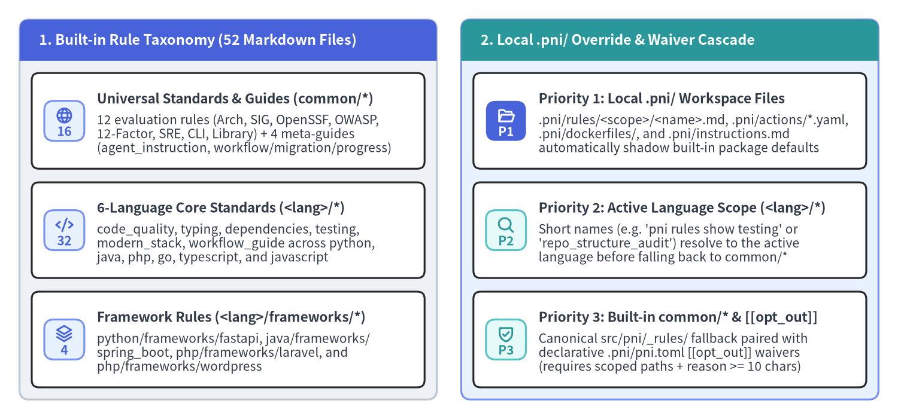
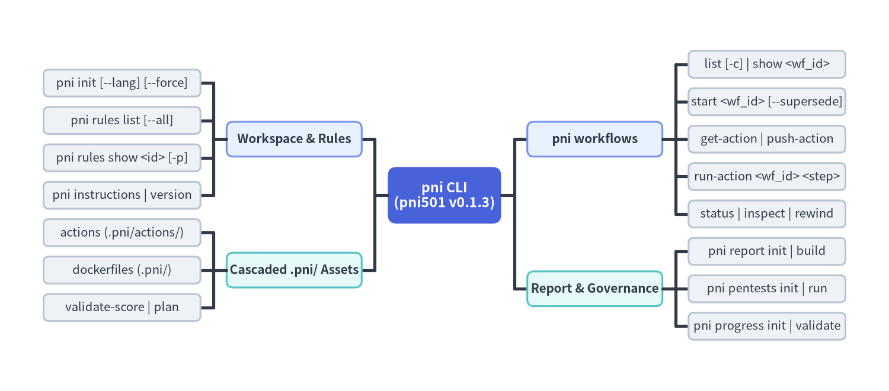

Rules Customization & CLI Reference
pni501 (v0.1.3) ships 52 built-in Markdown rule files across common/* (16 universal standards and orchestration guides) and <lang>/* (36 language and framework standards across 6 languages), resolves workspace customizations through a deterministic .pni/ override cascade, and exposes every lifecycle operation via the unified pni CLI.

Source Code
from drawlib.canvas import save, setup
from drawlib.icons import phosphor
from drawlib.smartarts import CardList, Panel
from drawlib.styles import Styles
setup(width=184, height=86, dpi=150)
tax_panel = Panel(
"1. Built-in Rule Taxonomy (52 Markdown Files)",
header_variant="filled",
header_height=8.5,
style=Styles.Neutral.patch(shape_r=2.0),
header_style=Styles.PrimaryFlat,
text_style=Styles.WhiteBold.patch(text_size=11.2),
)
tax_panel.draw(xy=(4.0, 4.0), width=85.5, height=78.0)
tax_cards = CardList(
style=Styles.WhiteBordered.patch(shape_r=1.5),
text_style=Styles.DarkBold.patch(text_size=10.8),
description_style=Styles.Dark.patch(text_size=10.0),
badge_shape="rounded_rect",
badge_style=Styles.PrimaryNeutral,
badge_text_style=Styles.PrimaryBold.patch(text_size=10.0),
icon_style=Styles.PrimaryBold,
direction="vertical",
spacing=2.8,
)
tax_cards.add(
"Universal Standards & Guides (common/*)",
"12 evaluation rules (Arch, SIG, OpenSSF, OWASP,\n"
"12-Factor, SRE, CLI, Library) + 4 meta-guides\n"
"(agent_instruction, workflow/migration/progress)",
badge_text="16",
icon=phosphor.globe,
)
tax_cards.add(
"6-Language Core Standards (<lang>/*)",
"code_quality, typing, dependencies, testing,\n"
"modern_stack, workflow_guide across python,\n"
"java, php, go, typescript, and javascript",
badge_text="32",
icon=phosphor.code,
)
tax_cards.add(
"Framework Rules (<lang>/frameworks/*)",
"python/frameworks/fastapi, java/frameworks/\n"
"spring_boot, php/frameworks/laravel, and\n"
"php/frameworks/wordpress",
badge_text="4",
icon=phosphor.stack,
)
tax_cards.draw(xy=(6.5, 6.5), width=80.5, height=64.5)
cas_panel = Panel(
"2. Local .pni/ Override & Waiver Cascade",
header_variant="filled",
header_height=8.5,
style=Styles.PrimaryNeutral.patch(shape_r=2.0),
header_style=Styles.SecondaryFlat,
text_style=Styles.WhiteBold.patch(text_size=11.2),
)
cas_panel.draw(xy=(94.5, 4.0), width=85.5, height=78.0)
cas_cards = CardList(
style=Styles.WhiteBordered.patch(shape_r=1.5),
text_style=Styles.DarkBold.patch(text_size=10.8),
description_style=Styles.Dark.patch(text_size=10.0),
badge_shape="rounded_rect",
badge_style=Styles.SecondaryNeutral,
badge_text_style=Styles.SecondaryBold.patch(text_size=10.0),
icon_style=Styles.SecondaryBold,
direction="vertical",
spacing=2.8,
)
cas_cards.add(
"Priority 1: Local .pni/ Workspace Files",
".pni/rules/<scope>/<name>.md, .pni/actions/*.yaml,\n"
".pni/dockerfiles/, and .pni/instructions.md\n"
"automatically shadow built-in package defaults",
badge_text="P1",
icon=phosphor.folder_open,
badge_style=Styles.PrimaryFlat,
badge_text_style=Styles.WhiteBold.patch(text_size=10.0),
icon_style=Styles.WhiteBold,
)
cas_cards.add(
"Priority 2: Active Language Scope (<lang>/*)",
"Short names (e.g. 'pni rules show testing' or\n"
"'repo_structure_audit') resolve to the active\n"
"language before falling back to common/*",
badge_text="P2",
icon=phosphor.magnifying_glass,
)
cas_cards.add(
"Priority 3: Built-in common/* & [[opt_out]]",
"Canonical src/pni/_rules/ fallback paired with\n"
"declarative .pni/pni.toml [[opt_out]] waivers\n"
"(requires scoped paths + reason >= 10 chars)",
badge_text="P3",
icon=phosphor.shield_check,
)
cas_cards.draw(xy=(97.0, 6.5), width=80.5, height=64.5)
save()
1. Orthogonal Rule Taxonomy (52 Built-in Files)
Every rule in pni501 is stored as clean, human- and LLM-readable Markdown under src/pni/_rules/ and paired with deterministic static, runtime, or security signals so AI evaluations never rely on ungrounded impressions.
1.1 Universal Standards & Meta-Guides (common/* — 16 Files)
The common/ scope contains 12 universal engineering evaluation rules (spanning all repositories plus Service / API, CLI Tool, and Library / SDK archetypes) and 4 orchestration meta-guides:
| Rule Identifier | Anchor Standard | Target Archetype | Deterministic Grounding Signals (ProjectFacts / AstFacts / RuntimeFacts) |
|---|---|---|---|
common/architecture |
Clean / Layered Arch | All Projects | circular_dependencies, internal_import_graph, boundary_violations, ArchitectureRecord |
common/maintainability |
SIG / ISO 25010 | All Projects | complex_functions (McCabe > 7, cognitive > 15), LOC <= 50, params <= 6, global_state_usages |
common/supply_chain |
OpenSSF Scorecard | All Projects | lockfiles_found, unpinned_dependencies, ci_supply_chain_issues, has_license, has_security_md |
common/security |
OWASP ASVS Baseline | All Projects | committed_secret_files, hardcoded_secrets, bug_risk_idioms, dangerous_sinks |
common/security_vulnerability |
Trivy + CWE Sinks | All Projects | SecurityScanFacts (App/OS CVEs, IaC misconfigs, redacted secrets) + AST dangerous_sinks & api_endpoints |
common/runtime_verification |
Heretic Container QA | All Projects | RuntimeFacts (Dockerfile build, offline --network=none test pass rate, line/branch coverage, Stage 3 smoke probe) |
common/git_workflow |
Conventional Repo | All Projects | has_gitignore, committed caches/artifacts (__pycache__, node_modules, .venv), workspace hygiene |
common/documentation |
Std Readme & Diataxis | All Projects | readme_headings, readme_line_count, docs_inventory, docstring_coverage_pct, docstring_issues |
common/twelve_factor |
12 / 15-Factor App | Service / API | scattered_env_access outside config modules, runtime_types, stateless worker readiness |
common/production_readiness |
Google SRE PRR | Service / API | missing_io_timeouts, unstructured_logging, health/readiness endpoints, container non-root hygiene |
common/cli_guidelines |
clig.dev Guidelines | CLI Tool | CLI entrypoints, --help/--version/--json support, stdout vs stderr separation, non-zero exit codes |
common/library_guidelines |
Public SDK Hygiene | Library / SDK | Explicit public exports (__all__), py.typed / .d.ts markers, import-time purity, zero sys.exit() in library code |
common/agent_instruction |
PNI Agent Protocol | Meta-Guide | Top-level deterministic pull-push execution loop & zero-hallucination protocol (pni instructions) |
common/workflow_guide |
PNI Authoring Spec | Meta-Guide | Guide for inspecting repository layout and authoring .pni/workflows/*.yaml & .pni/actions/*.yaml |
common/migration_planning |
Modernization Spec | Meta-Guide | Pre-flight user clarification checklist, based_on audit inheritance, and 5-phase gated migration planning |
common/progress_tracking |
Schedule & Git Gov | Meta-Guide | Guide for .pni/progress/<target>.yaml milestones, task DAG validation, and Git branch/commit governance |
1.2 Language & Framework Rule Catalog (<lang>/* — 36 Files)
Each of the 6 supported languages provides core evaluation rules (code_quality, typing, dependencies, testing), an ecosystem workflow_guide, and optional modern_stack or frameworks/* rules:
| Language Scope | Count | Built-in Rule Identifiers | Key Ecosystem & Framework Checkpoints |
|---|---|---|---|
Python (python/*) |
7 |
code_quality, typing, dependencies, modern_stack, testing, frameworks/fastapi, workflow_guide |
PEP 621 pyproject.toml + uv.lock, 100% public type hints, Google docstrings, Python 3.11+ pathlib / X | Y, pytest mirror layout, FastAPI lifespan & Depends() DI |
Java (java/*) |
6 |
code_quality, typing, dependencies, testing, frameworks/spring_boot, workflow_guide |
Maven/Gradle wrapper & lockfiles, generics safety (zero raw types), Javadoc @param sync, Java 21 record/sealed idioms, JUnit 5 @Test, Spring Boot constructor DI & @ConfigurationProperties |
PHP (php/*) |
8 |
code_quality, typing, dependencies, modern_stack, testing, frameworks/laravel, frameworks/wordpress, workflow_guide |
declare(strict_types=1), PSR-12 / PSR-4 autoloading, zero $_GET/$GLOBALS coupling, PHP 8.2+ readonly/enum, PHPUnit/Pest + pcov, Laravel FormRequest/Eloquent safety, WordPress $wpdb->prepare & nonces |
Go (go/*) |
5 |
code_quality, typing, dependencies, testing, workflow_guide |
gofmt/go vet, GoDoc comments on exported symbols, explicit if err != nil (%w wrapping, zero _ = err), narrow consumer-side interfaces (avoid any/unsafe.Pointer), table-driven t.Run tests |
TypeScript (typescript/*) |
5 |
code_quality, typing, dependencies, testing, workflow_guide |
tsconfig.json "strict": true (noImplicitAny, strictNullChecks), zero : any / as any (unknown + Zod narrowing), TSDoc comments, handled Promises, Vitest/Jest coverage |
JavaScript (javascript/*) |
5 |
code_quality, typing, dependencies, testing, workflow_guide |
ES Modules (import/export), JSDoc @param {Type} & @returns {Type} contracts, checkJs / // @ts-check, const/let & strict ===, Vitest/Jest/Node test suites |
2. The .pni/ Local Override Cascade & pni.toml Waivers
Running pni init initializes the .pni/ workspace directory. PNI resolves rules, composite actions, instructions, and container harnesses through a non-destructive override cascade so teams can tailor thresholds or container images without forking pni501:
| Workspace Path | Cascade Resolution Behavior | Purpose & Customization Pattern |
|---|---|---|
.pni/pni.toml |
Workspace root (or nearest ancestor .pni/pni.toml) |
Configures [project], default [targets], [scan] exclusions, [report] defaults, and [[opt_out]] waivers. |
.pni/rules/<scope>/<name>.md |
.pni/rules/ $\to$ built-in <active_lang>/ $\to$ built-in common/ |
Edit any copied .md rule in .pni/rules/ to customize thresholds (shown as Local (.pni) in pni rules list). Meta-guides (agent_instruction, workflow_guide) always resolve from built-in package files. |
.pni/actions/*.yaml |
.pni/actions/ $\to$ built-in <active_lang>/ $\to$ built-in common/ |
Customize composite action step rules, parameters, or prompts per project. |
.pni/workflows/*.yaml |
Project-defined in .pni/workflows/ |
Declares audit, migration (based_on), and progress workflows. |
.pni/dockerfiles/ |
explicit_dockerfile $\to$ .pni/dockerfiles/_templates/<lang>/<tool>.dockerfile $\to$ built-in src/pni/_dockerfiles/ |
Materializes target-scoped harness Dockerfiles (.pni/dockerfiles/<target>/Dockerfile + .dockerignore) for offline test/smoke execution. |
.pni/pentests/<target>/ |
Scaffolded via pni pentests init -w <workflow_id> |
Holds explicit Python + httpx dynamic penetration test probes (conftest.py, test_*.py). |
.pni/progress/<target>.yaml |
Scaffolded via pni progress init & verified via pni progress validate |
Defines project milestones, task dependency DAG (depends_on), and git_policy governance rules. |
To suppress intentional design trade-offs (such as a sandboxed CLI subprocess call or a dev-only Dockerfile stage) without weakening global rules, declare scoped [[opt_out]] entries in .pni/pni.toml with an explicit engineering reason (>= 10 non-whitespace characters):
[project]
name = "order-dispatch"
language_version = "3.12"
archetypes = ["web_api"]
[targets]
root = "."
source = ["src"]
tests = ["tests"]
docs = ["README.md"]
exclude = ["src/generated/**"]
[scan]
respect_gitignore = true
include_gitignored = ["uv.lock", "composer.lock"]
[report]
src_dir = "reports_src"
output_dir = "reports"
formats = ["pdf"]
lang = "en"
style = "google"
[[opt_out]]
id = "CWE-78"
scope = ["src/cli/sandbox_runner.py"]
reason = "Command arguments are validated against an allowlist and executed with shell=False."
3. Complete pni CLI Reference
The pni CLI (src/pni/cli.py) organizes all workspace initialization, rule discovery, stateful workflow orchestration, live penetration testing, progress governance, Drawlib report compilation, and Pydantic schema validation commands into a cohesive command hierarchy.

Source Code
from drawlib.canvas import save, setup
from drawlib.smartarts import MindMapNode
from drawlib.styles import Styles
setup(width=204, height=90, dpi=150)
txt_root = Styles.WhiteBold.patch(text_size=11.0)
txt_group = Styles.DarkBold.patch(text_size=10.0)
txt_leaf = Styles.Dark.patch(text_size=9.8)
root = MindMapNode(
"pni CLI\n(pni501 v0.1.3)",
shape="rectangle",
width=26.0,
height=13.0,
style=Styles.PrimaryFlat.patch(shape_r=2.0),
text_style=txt_root,
line_style=Styles.DarkBold,
line_length=6.0,
horizontal_margin=3.0,
vertical_margin=2.4,
children=[
MindMapNode(
"Workspace & Rules",
branch="left",
shape="rectangle",
width=31.0,
height=8.0,
style=Styles.PrimaryNeutral.patch(shape_r=1.5),
text_style=txt_group,
children=[
MindMapNode(
"pni init [--lang] [--force]",
shape="rectangle",
width=36.0,
height=6.2,
style=Styles.Neutral.patch(shape_r=1.2),
text_style=txt_leaf,
),
MindMapNode(
"pni rules list [--all]",
shape="rectangle",
width=36.0,
height=6.2,
style=Styles.Neutral.patch(shape_r=1.2),
text_style=txt_leaf,
),
MindMapNode(
"pni rules show <id> [-p]",
shape="rectangle",
width=36.0,
height=6.2,
style=Styles.Neutral.patch(shape_r=1.2),
text_style=txt_leaf,
),
MindMapNode(
"pni instructions | version",
shape="rectangle",
width=36.0,
height=6.2,
style=Styles.Neutral.patch(shape_r=1.2),
text_style=txt_leaf,
),
],
),
MindMapNode(
"Cascaded .pni/ Assets",
branch="left",
shape="rectangle",
width=31.0,
height=8.0,
style=Styles.SecondaryNeutral.patch(shape_r=1.5),
text_style=txt_group,
children=[
MindMapNode(
"actions (.pni/actions/)",
shape="rectangle",
width=36.0,
height=6.2,
style=Styles.Neutral.patch(shape_r=1.2),
text_style=txt_leaf,
),
MindMapNode(
"dockerfiles (.pni/)",
shape="rectangle",
width=36.0,
height=6.2,
style=Styles.Neutral.patch(shape_r=1.2),
text_style=txt_leaf,
),
MindMapNode(
"validate-score | plan",
shape="rectangle",
width=36.0,
height=6.2,
style=Styles.Neutral.patch(shape_r=1.2),
text_style=txt_leaf,
),
],
),
MindMapNode(
"pni workflows",
branch="right",
shape="rectangle",
width=31.0,
height=8.0,
style=Styles.PrimaryNeutral.patch(shape_r=1.5),
text_style=txt_group,
children=[
MindMapNode(
"list [-c] | show <wf_id>",
shape="rectangle",
width=36.0,
height=6.2,
style=Styles.Neutral.patch(shape_r=1.2),
text_style=txt_leaf,
),
MindMapNode(
"start <wf_id> [--supersede]",
shape="rectangle",
width=36.0,
height=6.2,
style=Styles.Neutral.patch(shape_r=1.2),
text_style=txt_leaf,
),
MindMapNode(
"get-action | push-action",
shape="rectangle",
width=36.0,
height=6.2,
style=Styles.Neutral.patch(shape_r=1.2),
text_style=txt_leaf,
),
MindMapNode(
"run-action <wf_id> <step>",
shape="rectangle",
width=36.0,
height=6.2,
style=Styles.Neutral.patch(shape_r=1.2),
text_style=txt_leaf,
),
MindMapNode(
"status | inspect | rewind",
shape="rectangle",
width=36.0,
height=6.2,
style=Styles.Neutral.patch(shape_r=1.2),
text_style=txt_leaf,
),
],
),
MindMapNode(
"Report & Governance",
branch="right",
shape="rectangle",
width=31.0,
height=8.0,
style=Styles.SecondaryNeutral.patch(shape_r=1.5),
text_style=txt_group,
children=[
MindMapNode(
"pni report init | build",
shape="rectangle",
width=36.0,
height=6.2,
style=Styles.Neutral.patch(shape_r=1.2),
text_style=txt_leaf,
),
MindMapNode(
"pni pentests init | run",
shape="rectangle",
width=36.0,
height=6.2,
style=Styles.Neutral.patch(shape_r=1.2),
text_style=txt_leaf,
),
MindMapNode(
"pni progress init | validate",
shape="rectangle",
width=36.0,
height=6.2,
style=Styles.Neutral.patch(shape_r=1.2),
text_style=txt_leaf,
),
],
),
],
)
root.draw(xy=(102.0, 45.0))
save()
3.1 Workspace Bootstrap, Rules & Validation Commands
Use top-level commands and pni rules to initialize .pni/, inspect engineering standards, bootstrap AI coding agents, and validate emitted JSON artifacts:
| Command | Arguments & Key Options | Description |
|---|---|---|
pni init |
[--lang/-l <lang>] [--force/-f] |
Auto-detect project language (python, java, php, go, typescript, javascript) and scaffold .pni/ (pni.toml, rules/, actions/, workflows/, instructions.md, and cache/.gitignore). |
pni instructions |
(alias: pni instruction) |
Print the AI agent bootstrap and stateful pull-push execution loop guide in Markdown to stdout. |
pni rules list |
[--all/-a] |
List active rules for common + detected <lang> (or all 52 rules across all 6 languages with --all), showing Builtin vs Local (.pni) source status. |
pni rules show |
<name> [--pretty/-p] |
Output a rule or workflow guide (common/workflow_guide, python/testing, or short name testing) in raw Markdown or a styled Rich panel (--pretty). |
pni validate-score |
[score_path] |
Validate a reports/<target>_score.json file against the Pydantic ScoreResult schema. |
pni validate-migration-plan |
[plan_path] |
Validate a reports/<target>_migration_plan.json file against the Pydantic MigrationPlanResult schema. |
pni validate-progress |
[progress_path] |
Validate a reports/<target>_progress.json file against the Pydantic ProgressResult schema. |
pni version |
(none) | Print the installed pni501 package name and version string. |
# Initialize .pni/ workspace and inspect active + language-specific rules
pni init
pni rules list --all
pni rules show common/workflow_guide
pni rules show python/testing --pretty
# Validate emitted JSON deliverables in CI
pni validate-score reports/full_audit_score.json
pni validate-migration-plan reports/migration_plan.json
pni validate-progress reports/project_progress.json
3.2 Stateful Workflow Execution & Debugging Commands (pni workflows)
pni workflows manages the SQLite state machine (.pni/cache/workflow_state.db) as well as zero-setup ad-hoc step execution (run-action) and non-destructive step rewinding (rewind):
| Command | Arguments & Key Options | Description |
|---|---|---|
pni workflows list |
[--category/-c audit|migration|progress] |
List workflows in .pni/workflows/ with category, based_on prerequisite link, step count, source targets, and outputs. |
pni workflows show |
<workflow_id> |
Expand composite actions into normalized primitive steps (1..N) and run preflight readiness checks for pentests, migrations, and progress plans. |
pni workflows start |
<workflow_id> [--supersede] |
Start a stateful workflow run (wf-...) in .pni/cache/workflow_state.db (--supersede cancels older unfinished runs of <workflow_id>). |
pni workflows get-action |
<run_id> |
Automatically execute pending deterministic analyzers (project_inspect, ast_analyze, run_check, security_scan, web_pentest, migration_analyze, progress_analyze) and emit the next act-XX prompt & JSON schema. |
pni workflows push-action |
<run_id> <action_id> [json] [--file/-f <path>] |
Validate agent JSON output against Pydantic schemas and repository file paths, persist to SQLite, and advance to the next step. |
pni workflows run-action |
<workflow_id> <action> [--base-url <url>] [--force-pentests] [--fail-on-findings] |
Execute a single step or analyzer inside <workflow_id> directly with zero prior SQLite run setup (ideal for debugging Dockerfiles, pentests, or CI gates). |
pni workflows status |
[run_or_wf] [-w <wf>] [-s <status>] [--latest] [-n <limit>] [--json] |
Inspect run history or action-by-action step progress (done/total, current step) from SQLite without raw sqlite3 queries. |
pni workflows inspect-action |
<run_or_wf> <action> [--agent-input | --deterministic] [--json] [-o <path>] |
Export recorded deterministic analyzer JSON facts or submitted agent JSON inputs from SQLite. |
pni workflows rewind |
<run_or_wf> <action> [--pull/-p] (alias: retry-action) |
Rewind a run back to <action>, re-sync .pni/workflows/<id>.yaml parameters, and clear downstream step outputs for clean re-execution. |
pni workflows cancel |
<run_id> | --superseded [-w <wf>] |
Cancel an abandoned in_progress workflow run or clean up superseded runs in SQLite. |
# Inspect workflow pipeline and execute the stateful Pull-Push loop
pni workflows show full_audit
pni workflows start full_audit --supersede
pni workflows get-action wf-1a2b3c4d
pni workflows push-action wf-1a2b3c4d act-02 --file payload.json
# Debug a single step ad-hoc or rewind an existing run to re-run runtime verification
pni workflows run-action full_audit runtime_verification
pni workflows status wf-1a2b3c4d
pni workflows inspect-action full_audit emit_score --agent-input -o last_score.json
pni workflows rewind wf-1a2b3c4d runtime_verification --pull
3.3 Visual Reports, Penetration Tests & Progress Governance Commands
Dedicated subcommand groups manage Drawlib report compilation (pni report), live loopback HTTP penetration test suites (pni pentests), and schedule/Git governance manifests (pni progress):
| Command | Arguments & Key Options | Description |
|---|---|---|
pni report init |
[target] [--src-dir reports_src] [-l en|ja] [-s google|default|monochrome] [--keep-samples] [-f] |
Non-destructively scaffold or refresh reports_src/<target>_src/ (drawlib.toml, styles.py, <lang>/) while preserving existing authored *.md chapters. |
pni report build |
[target] [--src-dir reports_src] [-o reports] [-f pdf|html|markdown|images] [--toc/--no-toc] [--no-cache] |
Run lint_drawlib_chapters preflight checks, compile reports/<target>.pdf (default A4 vector PDF with ToC), and verify zero broken links when -f html is enabled. |
pni pentests init |
[-w <wf>] [-t <root>] [-s <src>] [-l <lang>] [--force/-f] |
Discover API endpoints from AST facts and materialize explicit Python + httpx DAST suites (conftest.py, test_*.py) in .pni/pentests/<target>/. |
pni pentests run |
[-w <wf>] [-t <root>] [-s <src>] [--base-url <url>] [--container-engine auto|docker|podman] [-f] |
Boot an isolated loopback container (or target --base-url) and execute .pni/pentests/<target>/ to verify exploitability (PentestFacts). |
pni progress init |
[target] [-w <wf>] [--force/-f] |
Scaffold a starter .pni/progress/<target>.yaml manifest with milestones, tasks, and git_policy. |
pni progress validate |
[target_or_path] |
Validate .pni/progress/<target>.yaml schema, ISO-8601 dates, git_policy, and acyclic depends_on task DAG before starting a progress workflow. |
# Scaffold and compile a 7-chapter Drawlib visual PDF report
pni report init full_audit --src-dir reports_src --lang en --style google
pni report build full_audit --src-dir reports_src --output-dir reports
# Materialize and execute live HTTP penetration tests for a web service workflow
pni pentests init -w full_audit
pni pentests run -w full_audit
# Initialize and validate a project progress & Git governance plan
pni progress init project_progress -w full_audit
pni progress validate project_progress
For end-to-end walkthroughs of these commands in action, see the Quickstart Guide, Workflows & Pre-Flight Gates, and Drawlib Visual Reporter.